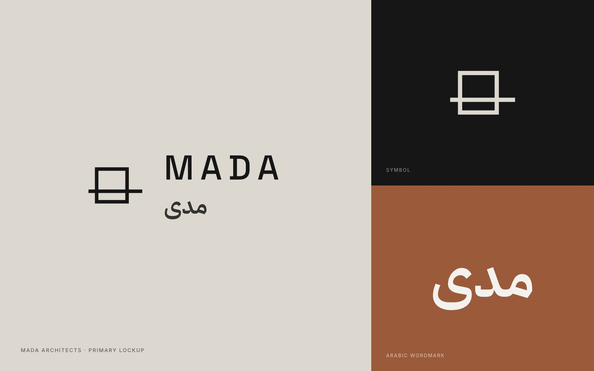
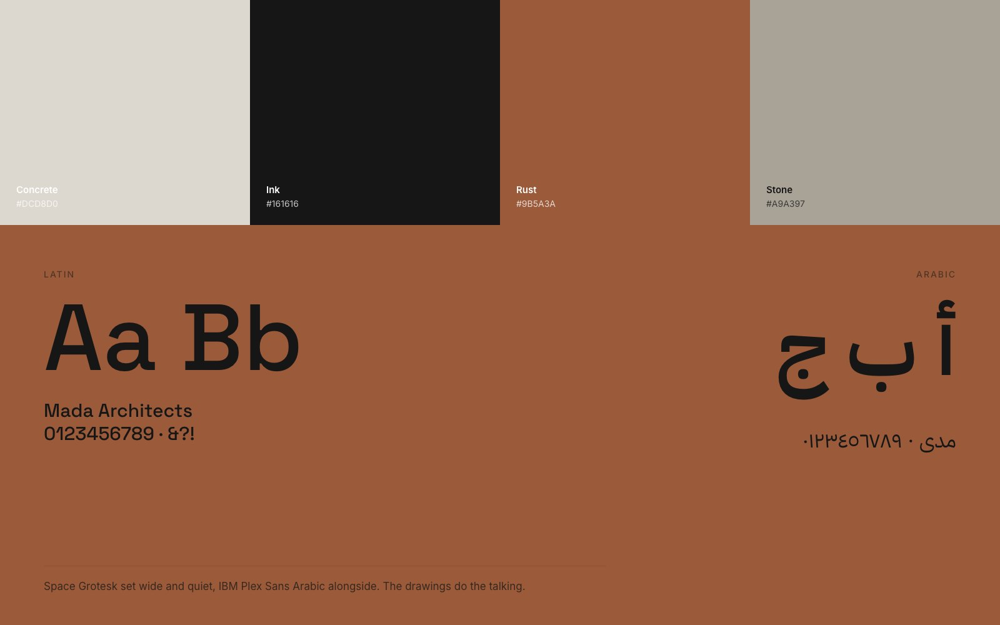
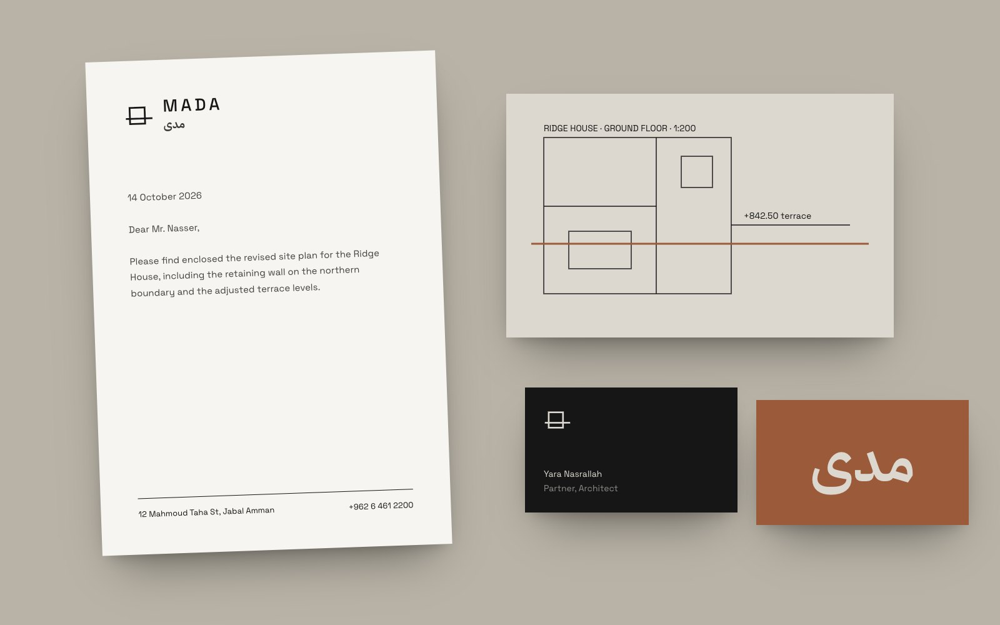

An eight-person practice whose houses were better than its website. We rebuilt the site around the buildings and got out of their way.
Mada's work was winning competitions but its site was a template with small thumbnails and no drawings. Clients came through word of mouth, and the partners wanted a site they could send to a developer in Riyadh without apologising for it.
We commissioned new photography of six houses and designed a site that shows each project the way an architect presents it: site, plan, then the finished rooms. The identity is deliberately quiet, a horizon line running past a frame, set in Space Grotesk with IBM Plex Sans Arabic. The drawings do the talking.



“For the first time our website looks like it was designed by architects.”
Yara Nasrallah, partner